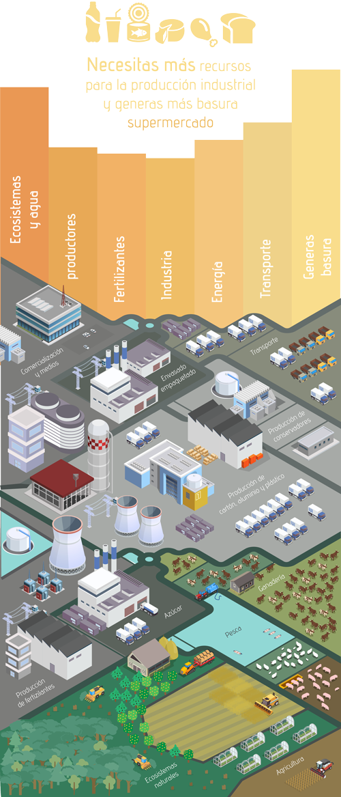
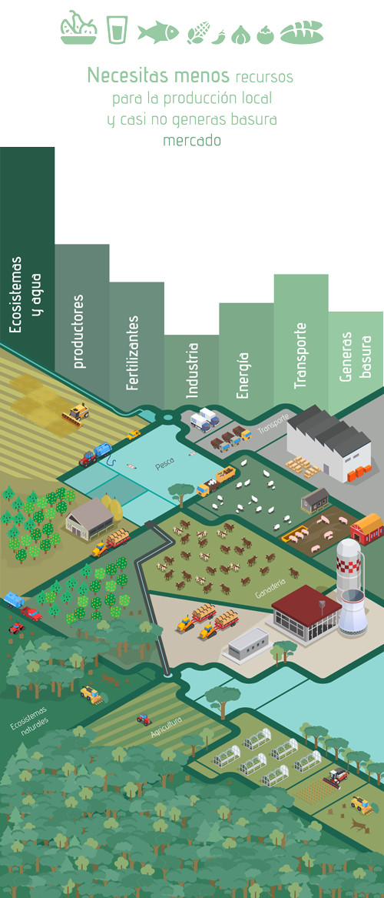
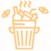

Atención si vives en México y tienes entre 6 y 17 años,
o si eres mexicano pero vives en otro país, puedes participar en las siguientes categorías:
Niños de 6 a 8 años
Niños de 9 a 11 años
Niños de 12 a 14 años
Jóvenes de 15 a 17 años
Premios
Se darán premios de 1º, 2º, y 3º, lugar por cada categoría de edad.
|
|
|
Además, será seleccionada la mejor ilustración de cada estado. Las 12 ilustraciones ganadoras más las 32 seleccionadas de los estados formarán parte de
la exposición digital "Entre azul y verde: Somos lo que comemos".
¿Quieres participar? Es muy sencillo, sigue estos 5 pasos:
¿De dónde viene lo que comemos?


- Nos alimentamos de naturaleza
Desde el inicio de la agricultura, hace unos 10,000 años, se calcula que se han utilizado como alimentos cerca de 7,000 especies de plantas y cientos de especies animales. En los últimos 50 años, esta gran diversidad ha disminuido ocasionando que muchas variedades locales desaparecieran. Actualmente el 90% de los requerimientos calóricos y de proteínas de la dieta humana se cubren con sólo 15 tipos de cultivos de vegetales/plantas y 6 especies de animales domésticos. La mitad de la energía de origen vegetal que consumimos proviene de tan sólo tres especies: trigo, arroz y maíz. - ¿Sabes de dónde vienen los productos que consumes?
Una gran cantidad de especies de plantas de las cuales nos alimentamos actualmente en todo el mundo tienen su origen y han sido cultivadas, por el ser humano en nuestro país, como el maíz, el frijol, la calabaza, el chile, el amaranto, el tomate verde, la vainilla, y el nopal. A partir estas especies se desarrolló nuestra exquisita y reconocida cocina tradicional mexicana. ¡Mmmmhhhh que rico!
Pero los alimentos no siempre han tenido este aspecto. ¿Te imaginas cuan largo ha sido el proceso de selección, diversificación, innovación, intercambio con otras regiones, adaptación, mejoramiento genético, uso y manejo por el que han pasado estas plantas y sus productos para llegar a nuestras manos tal y como hoy los consumimos?
Los alimentos provienen de los cultivos y granjas, y de ahí se van a mercados y supermercados. Cuando compramos alimentos procesados y bebidas embotelladas, estas contienen colores y sabores artificiales y mucha azúcar. Además, vienen en empaques, se han refrigerado y transportado grandes distancias, muchas veces desde otros países. Por el contrario, cuando elegimos alimentos del campo que se producen cerca de nuestra casa, ahorramos empaques, gasolina, refrigeración, disminuimos la contaminación, producimos menos basura y el ambiente es más sano. - ¿Qué pasa con los empaques cuando nos comemos los alimentos?
¿Sabes cuánta energía se necesitó para producir estos empaques? ¿Y cuánta se necesita para reciclarlos? ¿Sabías que para producir una botella desechable de agua se necesita más agua que la que contiene el envase? ¿Cuántos alimentos podríamos consumir sin que tuvieran que estar empacados? ¿Cuántos empaques crees que nos ahorraríamos? - 
- Con tus elecciones ¿cuidas o destruyes tu ecosistema?
Un ecosistema es un lugar en donde conviven plantas y animales, entre ellos y con el suelo, agua, clima de la región. Vivimos en ecosistemas y somos parte de ellos. El aire que respiramos, el agua que bebemos, los alimentos que consumimos... todos se producen en el ecosistema. Nuestras acciones cotidianas tienen un impacto en la naturaleza que nos rodea. Las especies más frágiles se están quedando sin hogar y podrían extinguirse. ¿Qué podemos hacer para ayudarlas? ¿Qué plantas y animales conforman tu ecosistema? ¿Cómo podemos mejorar los ecosistemas, para tener una mejor convivencia? ¿Cómo podemos reducir la generación de basura, la contaminación y promover más acciones amigables con la naturaleza, nuestra alimentación y nuestra salud?
- Tamaño Carta dimensiones: 28 cm x 21.5 cm
- Tamaño Doblecarta dimensiones: 28 cm x 43 cm
- Sin marcas de agua
- Sin alteraciones digitales

- En una hoja anexa, anota la siguiente información e inclúyela dentro del sobre junto con tu dibujo o pintura:
- a. Título de la obra
- b. Nombre completo del menor de edad participante y edad
- c. Domicilio (calle, número, colonia, alcaldía o municipio, código postal, estado)
- d. Teléfono de contacto
- e. Correo electrónico
- f. Medio por el cual te enteraste del concurso (Redes sociales, Convocatoria Física, Radio, Televisión, Página de Internet)
- g. La madre, padre o tutor, debe de incluir su nombre y firma acompañado de la siguiente leyenda: Autorizo la participación de mi hijo/a, acepto las bases y otorgo mi conformidad a lo expuesto en ellas.
- h. Si eres mexicano y vives fuera de México, manda una copia del documento que acredite tu nacionalidad mexicana.
- i. Y, por último, escribe un pensamiento sobre lo que tú puedes hacer para cuidar tu salud y la del planeta en el que vivimos.
- Recepción de trabajos del 9 de julio al 8 de septiembre de 2019, después de esta fecha no se recibirán más trabajos y se tomará en cuenta el sello postal para confirmar la fecha de envío.
- Las dirección a donde puedes enviar tu dibujo es:
CONABIO Liga Periférico - Insurgentes Sur, Núm. 4903, Col. Parques del Pedregal, Alcaldía Tlalpan, C.P. 14010, Ciudad de México. Dirección General de Comunicación de la Ciencia
Antes de enviar tu dibujo no olvides anotar tu edad en la esquina superior derecha del sobre.
¿Cómo puedo participar?
Podrán participar todos los dibujos y pinturas realizados por niños y jóvenes mexicanos de 6 a 17 años, que vivan en México o en el extranjero (que acrediten la nacionalidad mexicana).
Serán candidatos a participar todos los dibujos y pinturas enviados que cumplan estrictamente con los siguientes requisitos:
- 1. Título de la obra.
- 2. Nombre completo y edad.
- 3. Correo electrónico.
- 4. Domicilio (calle, número, colonia, alcaldía o municipio, código postal, estado).
- 5. Teléfono.
- 6. Medio por el cual te enteraste del concurso.
- 8. Descripción de tu dibujo incluyendo lo que tú puedes hacer para cuidar tu salud y la del planeta.
- 9. La madre, padre o tutor debe de incluir su nombre y firma acompañado de la siguiente leyenda: Autorizo la participación de mi hijo/a al concurso "Entre azul y verde", acepto las bases y otorgo mi conformidad a lo expuesto en ellas.
- 10. Declaración bajo protesta de decir verdad del padre, madre o tutor legal por la que manifieste que la pintura es del menor de edad participante.
- 11. La firma del padre, madre o tutor legal en el documento, con lo cual manifiesta su voluntad y otorga el consentimiento de todo lo manifestado en el escrito.
- CONABIO Liga Periférico-Insurgentes Sur, Núm. 4903, Col. Parques del Pedregal, Alcaldía de Tlalpan, 14010, Ciudad de México. Dirección General de Comunicación de la Ciencia
entreazulyverde@conabio.gob.mx
Condiciones legales
II. Los concursantes no podrán ser familiares de los organizadores ni de los miembros del jurado.
III. Los participantes conservarán los derechos sobre sus ilustraciones, pero al concursar, el padre o la madre o el tutor otorgan una licencia de uso a título gratuito para que la CONABIO y las instituciones patrocinadoras puedan hacer uso de las ilustraciones por sí o por terceros en México y otros países para su divulgación, reproducción, publicación, impresión, edición, comunicación pública con fines promocionales o de difusión relacionados con el presente concurso con la consideración de que cada vez que se usen, deberá darse crédito correspondiente al autor.
IV. En el caso de los participantes que resulten ser ganadores de alguna categoría, los padres o el tutor otorgarán una licencia de uso, en los términos que se establecen en la siguiente página web www.entreazulyverde.mx en el entendido de que siguen conservando los derechos patrimoniales de la pintura y cualquier uso con fines comerciales u otro no autorizado requerirá autorización de los padres o tutores o titular de los derechos.
V. Los concursantes, tendrán 15 días después de que se anuncien los trabajos premiados, para recoger su dibujo en CONABIO Liga Periférico-Insurgentes Sur, Núm. 4903, Col. Parques del Pedregal, Alcaldía Tlalpan, 14010, Ciudad de México. Después de este tiempo, los organizadores del concurso no se hacen responsables por los mismos.
VI. Los datos personales de los participantes y de los padres o tutores quedan protegidos conforme al aviso de privacidad que se encuentra publicado en la siguiente página web: www.entreazulyverde.mx (aviso de privacidad)
VII. Cualquier asunto o base no establecido en el presente documento, será resuelto por el jurado, quien será la máxima autoridad en el presente concurso.
VIII. Finalmente, en el caso de algún empate en la toma de decisiones del jurado, el presidente del jurado tendrá un voto calificado para la toma de decisiones.